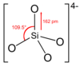

silicate

Definition: In chemistry, a silicate is any member of a family of polyatomic anions consisting of silicon and oxygen, usually with the general formula [SiO(4-2x)−4−x]n, where 0 ≤ x < 2. The family includes orthosilicate SiO4−4 (x = 0), metasilicate SiO2−3 (x = 1), and pyrosilicate Si2O6−7 (x = 0.5, n = 2). The name is also used for any salt of such anions, such as sodium metasilicate; or any ester containing the corresponding chemical group, such as tetramethyl orthosilicate. The name "silicate" is sometimes extended to any anions containing silicon, even if they do not fit the general formula or contain other atoms besides oxygen; such as hexafluorosilicate [SiF6]2−.Most commonly, silicates are encountered as silicate minerals.
Source: Wikipedia
Wikipedia Page
Wikidata Page